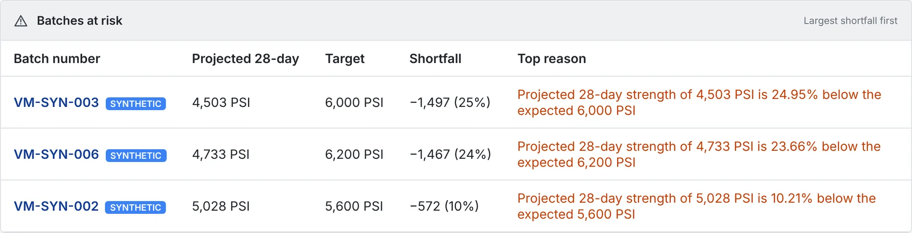
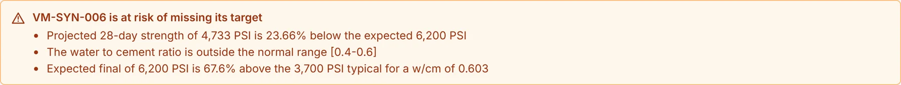

Early warning
Home lists every batch projected to miss its target, largest shortfall first. Each batch explains why in plain language: a cold cure, too much water in the mix, early moisture loss.
VM-SYN-006 · projected 4,733 PSI against a 6,200 PSI target · 24% short

